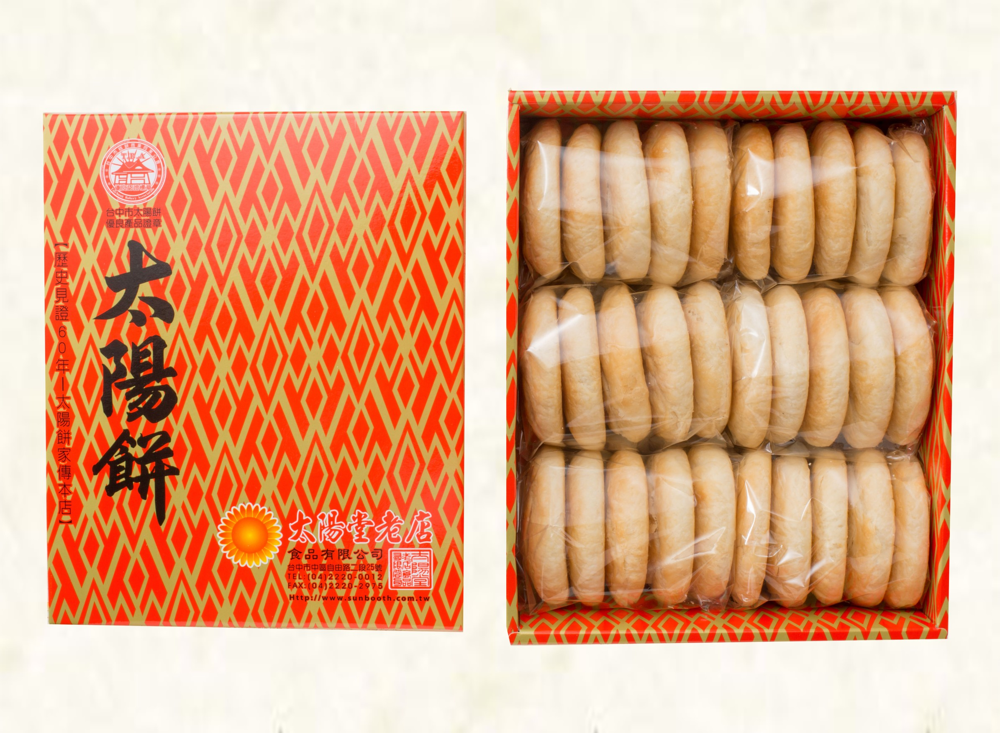
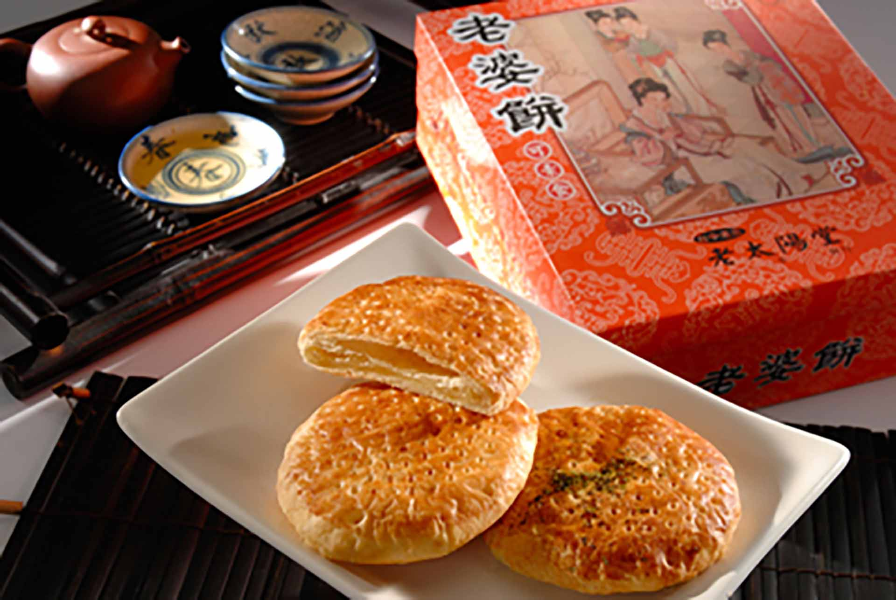
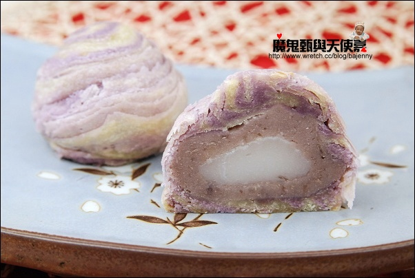
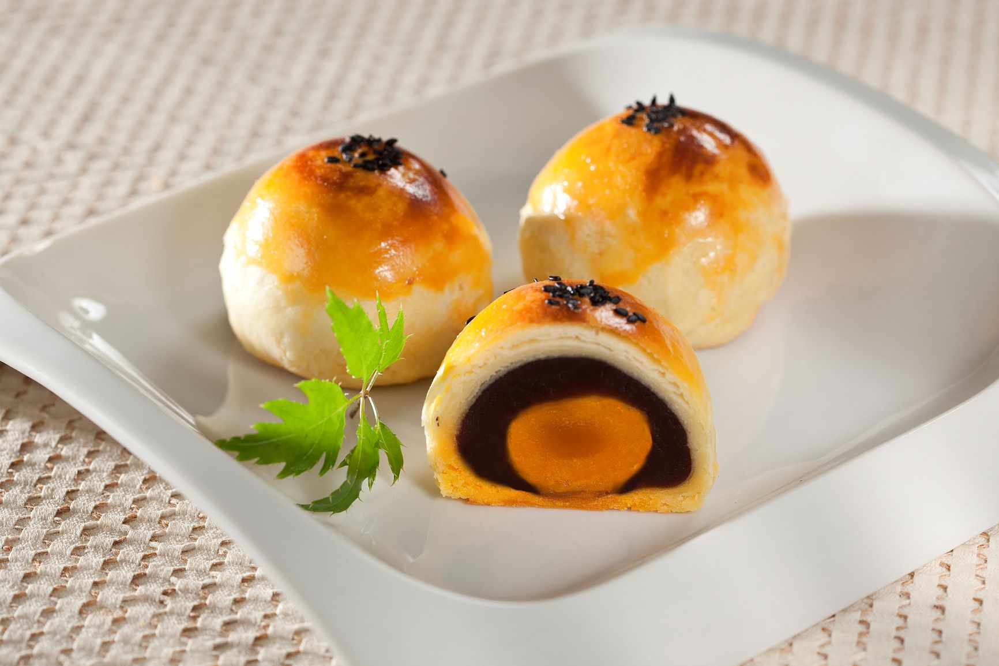

太陽餅

太陽餅，是一種甜餡薄餅，一般內餡是麥芽糖，源起於台中市神岡區社口一帶林家崑派的麥芽餅，是台灣台中市的點心，為中臺灣的名產之一。
太陽餅的形狀近似圓形，早期製作的比較大，一般食用前多會平均分成四塊，近年來則有較小的太陽餅出現，以方便拿取食用。其包裝外盒也頗具特色，
最早是由台南畫家顏水龍所設計的向日葵圖案構成。 內餡麥芽糖味道清甜，多半為直接食用配濃茶之茶點，餅皮酥而易碎，
食用時容易掉落餅屑，故有不少人會置餅於碗內，沖泡熱開水，呈粥樣食用。
老婆餅

「老婆餅」最早源自台中嗎？事實上，是廣東地區的傳統美食，而民眾購買的是「改良後」的台灣版。「正港」老婆餅包裹冬瓜蓉，
口感紮實香滑，和台灣版包上麻糬的Q嫩口感大不相同。
大甲芋頭酥

台灣芋頭酥是由台灣大甲芋頭產業推手芋頭酥之父 阿聰師所發明創造，嚴選上等芋頭，以植物油製成，在芋頭酥之父「阿聰師」的巧手下，
化做一片片層次分明的玫瑰花瓣，純手工製作，每日新鮮烘焙。 來到大甲您不得不買的大甲名產伴手禮。
蛋黃酥

蛋黃酥是台灣月餅的衍生品；也是一般大眾所認定台式油皮月餅中的一種。內餡是鹹鴨蛋做的蛋黃及紅豆做的豆沙，
甜而不膩，香酥可口，也是中秋節時常吃的月餅之一。